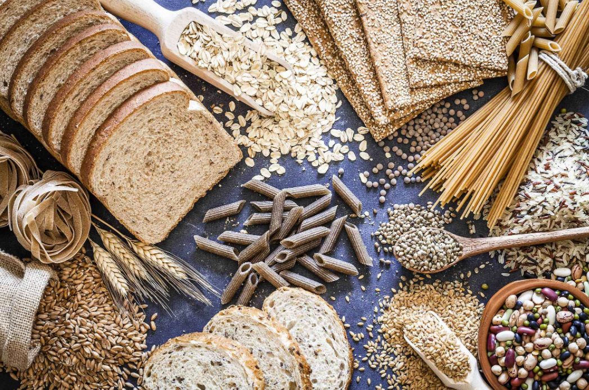
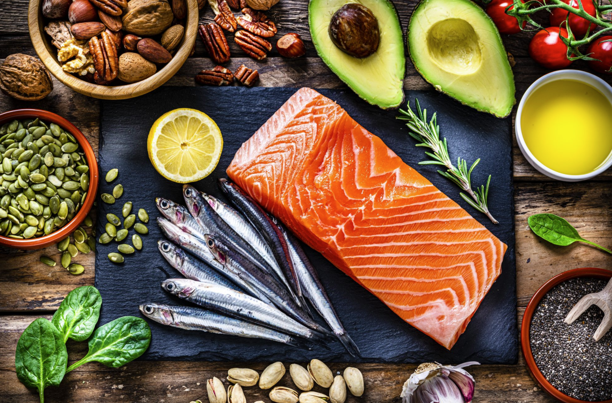

Carbohydrates
Carbohydrates. One of the essential nutrients and the primary fuel source of the body. These include grains, certain vegetables (i.e. potatoes), and fruits.
Carbohydrates are one of the main classes of nutrients that are important to the body. These biological molecules are generally composed of carbon (C), and water molecules (H2O), thus giving its name "carbo-" "-hydrate". This class of nutrients includes simple to complex sugar molecules namely monosaccharides, disaccharides, and polysaccharides. These nutrients are essential since they are the primary fuel source of the body especially of the brain.
There are three main types of carbohydrates: sugars, starches and fibres. Sugars are the simplest carbohydrates as they are in the most basic form. This form of carbohydrates is digested quickly and are naturally found in vegetables, fruits, and milk. Starches are a type of complex carbohydrates which are composed of multiple links of simple sugars. This also means that they take longer to be broken down into simple sugars and digested by the body. Common Sources of starch include vegetables like pasta, rice, and potatoes. The last type of carbohydrates are fibres which are also complex in nature. Although they cannot be digested by the body, it is still important in adding bulk to our stools to help food pass quickly through our digestive system.
Lipids
Lipids. They are mostly important for energy storage and are composed of various fatty acid chain lengths that differ in shape and structure.
Foods such as seeds, nuts, and legumes are one of the major sources of fats and oils also known as lipids. Lipids are also an important source of energy and other essential nutrients. These are molecules that contain hydrocarbons - chains of hydrogens and carbons. They compose the building blocks of the structure and function of living cells. There are multiple types of lipids which can be classified based on their fatty acid chain length, level of saturation, and shape. Fatty acid is the basic unit of lipids which can vary in terms of chain length. Their level of saturation can be determided based on the amount of H contained in the fatty acid structure. In general, a saturated fatty acid is a type of fatty acid that does not have any double bonds. Saturated fatty acids can be packed tightly with each other, thus making them solid at room temperature. Examples of saturated fatty acids include animal fats, butter, and lard. Additionally, the presence of a double bond represents unsaturation, which alters their shape and stucture. This is the main reason why plant-based oils are generally liquid at room temperature. Lastly, a trans fat or trans-fatty acid is a special type of fatty acid that is generated from hydrogenation in which hydrogen atoms are added to a polyunsaturated fatty acid. This process converts plant-based oils into a more solid form like margarine.
There are 3 subclasses of lipids found in food. These are triglycerides, phospholipids and sterols. Triglycerides composes 95% of all fats consumed in our diet, and are composed of three fatty acids molecules and a glycerol backbone. Phospholipids is the second subclass of lipids found in food and only compose a very small portion of our diet. They are also the major component of cellular membranes. Their structure is similar to triglycerides except they only have 2 fatty acid molecules and a phosphate head group. The last subclass of lipids is sterols which are lipids that contain multiple rings of carbon atoms. They are mostly made by our bodies, which makes them an unessential component of our diet. They are important in emulsifying fat and as second messenger molecules of our body. The most common example of a sterol is a cholesterol.
Protein

Proteins. They are composed of amino acids that are further modified into their final structure as proteins.
Proteins are another important component of a healthy diet. They are the critical component of all tissues and are made up of chemical 'building blocks' called amino acids. Amino acids are nitrogen- and carboxylic acid-containing molecules that can either be acidic, basic, polar, or nonpolar based on their side chains. In general, there are 20 essential amino acids and 9 of those has to come from our diet. Long chains of amino acids acan be made to form peptides, and multiple chains of peptides form polypeptides. Futher modifications to the shape and structure of the polypeptide based on various chemical interactions make the final structure of proteins.
Proteins can be classified as either complete or incomplete. Complete proteins are those that contail sufficient amounts of essential amino acids. These are often found in eggs, fish, and milk. Incomplete proteins contain insufficient amounts of essential amino acids for growth and health. These are often plant-based proteins that are found in soybeans, nuts, and legumes.